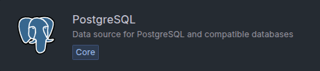
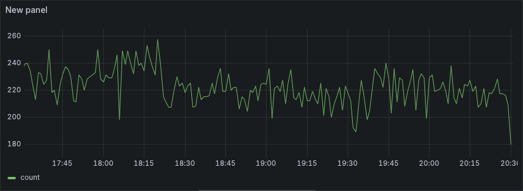

Grafana with PostgreSQL
Prepare Grafana to visualise IoT and RTLS data from Pareto Anywhere via a PostgreSQL database.
The TL;DR (Too Long; Didn't Read)
Learn how to install and prepare Grafana for IoT and RTLS applications with Pareto Anywhere.
- What's Pareto Anywhere?
- Pareto Anywhere is open source IoT middleware that makes the data from just about anything usable.
- Why PostgreSQL?
- PostgreSQL, the world's most advanced open source relational database, facilitates time series and geospatial queries of the IoT and RTLS data from Pareto Anywhere.
- Is this stack open source?
- Yes! Pareto Anywhere + PostgreSQL + Grafana OSS represents an open source stack for Internet of Things (IoT) and real-time location systems (RTLS) applications.
Installing Grafana Step 1 of 3
Install the dashboarding tool on a specific operating system.
- Local installation?
- Yes. Grafana will be installed on the local machine, expecting a local installation of PostgreSQL.
- OSS or Enterprise?
- Choose Grafana Enterprise for a path to premium features, OSS (Open Source Software) otherwise.
Install Grafana Part 1
Follow the instructions specific to your operating system to install Grafana:
Follow the official Install Grafana on Debian or Ubuntu tutorial.
Follow the official Install Grafana on Windows tutorial.
Run Grafana Part 2
Follow the instructions specific to your operating system to run Grafana:
Open a terminal and start the grafana systemd service with the following command:
-
sudo systemctl start grafana-server
In the case where Grafana should run automatically each time the machine boots, run also the following command:
-
sudo systemctl enable grafana-server
Execute the bin/grafana-server.exe file provided by the installation.
In the case where Grafana should run automatically each time the machine boots, use NSSM, as recommended in the Grafana installation tutorial.
Log in to Grafana Part 3
With Grafana running locally, browse to the login page at localhost:3000 and then:
- Log in with username admin and password admin
- When prompted, change the admin password (ex: paretoanywhere)
- Log in with the username admin and the chosen password
The Welcome page should be displayed following a successful login. It is now possible to connect PostgreSQL as a data source, which is covered in Step 2 below.
Configuring the data source Step 2 of 3
Select and configure PostgreSQL as a data source.
- What's a data source?
- A data source provides the data for Grafana to visualise. In this case it is a PostgreSQL database.
- Local PostgreSQL only?
- This tutorial covers the simple case of a local PostgreSQL instance, but Grafana can equally connect to a remote instance.
Add data source Part 1
From the Home screen of Grafana, do either of the following:
- click the Add your first data source link from the Welcome panel -or-
- select Data Sources from menu at left, and then click the + Add new data source button from the Data Sources page
Then, from the list of data sources, scroll down to the PostgreSQL data source and click its icon:
This will open a PostgreSQL data source configuration page. Complete the configuration as described in Part 2 below.
Configure data source Part 2
From the PostgreSQL data source configuration page, complete the fields as specified in the tables below:
| Name | grafana-postgresql-paretoanywhere |
|---|---|
| Default | true |
| Host URL | localhost:5432 |
|---|---|
| Database name | pareto_anywhere |
| Username | grafana |
|---|---|
| Password | paretoanywhere |
| Version | 15* |
|---|
*select the closest version to the installed PostgreSQL instance
All other configuration options may be left at the default values.
Click the Save & test button to complete the configuration. A Database Connection OK message should appear.
The PostgreSQL data source is successfully configured. It is now possible to build queries for visualisation, which is covered in Step 3 below.
Building a query/visualisation Step 3 of 3
Build a PostgreSQL query to visualise IoT and RTLS data.
- What's a query?
- In the case of a PostgreSQL data source, a query is an expression in the PostgreSQL variant of the standard SQL language, which returns data from the database.
- Which visualisations?
- Grafana supports many visualisations. For IoT data it is common to use Time Series, and for RTLS data it is common to use GeoMap.
Add new visualisation Part 1
In Grafana, open an existing dashboard, or create a new dashboard.
From the top menu of the dashboard, click Add and select Visualization.
An Edit panel screen will appear with a Queries window, similar to that shown below.
Enter query Part 2
In the Queries window, click the Code selector and paste in the following query:
SELECT $__timeGroupAlias(timestamp, 1m), COUNT(dynamb) FROM dynamb GROUP BY 1;
This query will count the number of dynamb entries per minute as a time series.
Run query Part 3
Click Run query to execute the query on the PostgreSQL database and visualise the result, which may resemble the following:
If the visualisation indicates No data and a warning icon appears at the top left of the panel, then an error has occurred. Hover over the icon to observe the error message.
Configure panel Part 4
Customise the visualisation by editing the panel options at right. Consult the following Grafana documentation pages for details:
After the panel is configured, click Save dashboard to save the visualisation and the dashboard in which it resides.


Tutorial prepared with ♥ by jeffyactive.
You can reelyActive's open source efforts directly by contributing code & docs, collectively by sharing across your network, and commercially through our packages.Where to next?
Continue exploring our open architecture and all its applications.
-

-
Directory of Devices
Browse all device configuration tutorials and development guides.
-

-
reelyActive Developers
Browse all developer documentation and tutorials.
-

-
reelyActive
Together, let's make sense of things.